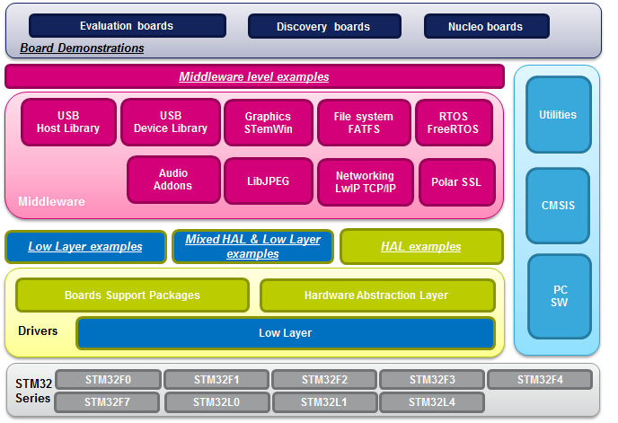

|
STMCube is an STMicroelectronics original initiative to ease developers
life by reducing development efforts, time and cost.
STM32Cube covers STM32 portfolio.
STM32Cube Version 1.x includes:
- The
STM32CubeMX, a graphical software configuration tool that allows to
generate C initialization code using graphical wizards.
- A
comprehensive embedded software platform, delivered per series (such as
STM32CubeL0 for STM32L0 series)
- The
STM32Cube HAL, an STM32 abstraction layer embedded software, ensuring
maximized portability across STM32 portfolio
- A
consistent set of middleware components such as RTOS, USB, FatFS,
STM32_TouchSensing_Library
All
embedded software utilities come with a full set of examples.
- The
STM32Cube firmware solution offers a straightforward API with a modular
architecture, making it simple to fine tune custom applications and
scalable to
fit most requirements

- The
above picture gives an overview of the STM32 ecosystem. Be aware that
this release concerns just the STM32CubeL0 firmware package. Some of
the blocks shown on the picture might not be available for the L0xx
series devices.
-
The
HAL
(Hardware Abstraction Layer) drivers provided within this
package supports
the following STM32L011xx, STM32L021xx, STM32L031xx, STM32L041xx, STM32L051xx,
STM32L052xx, STM32L053xx, STM32L061xx, STM32L062xx, STM32L063xx,
STM32L071xx, STM32L072xx, STM32L073xx, STM32L081xx, STM32L082xx and
STM32L083xx devices.
- The
STM32CubeL0 firmware package comes with an updater utility, STM32CubeUpdater,
that can be configured for automatic
or on-demand checks for new firmware package updates (new
releases or/and patches).
- For quick getting started with the
STM32CubeL0 firmware package, refer to UM1754 and you can
download firmware updates and all the latest documentation from www.st.com/stm32cubefw
- Below
links to
the most useful documents
- UM1749: Description of STM32L0xx
HAL drivers
- UM1721: Developing Applications on
STM32Cube with FatFs
- UM1722: Developing Applications on
STM32Cube with RTOS
- UM1769: STM32CubeL0 Nucleo
demonstration firmware
- UM1810: STM32L0 Discovery
demonstation firmware
- UM1734: STM32Cube USB device
library
Update
History
V1.7.0
/ 31-May-2016
Main
Changes
- \Drivers
- Fix known defects in HAL/LL COMP, HAL RTC and HAL LCD.
- \CMSIS
- Updated stm32l083xx.h file (added missing Pos and Msk macros).
- Added LCD bit definition for stm32l053xx, stm32l063xx, stm32l073xx, stm32l083xx devices.
Contents
Development
Toolchains and Compilers - IAR
Embedded
Workbench for ARM (EWARM) toolchain V7.60.1 +
ST-Link.
- KEIL
uVision
(MDK-ARM) toolchain V5.17.00
+
Keil.STM32L0xx_DFP.1.4.0 + ST-Link.
- System Workbench STM32 (SW4STM32)
toolchain V1.7 +
ST-Link.
- Atollic TrueSTUDIO
STM32 (TrueSTUDIO) toolchain V5.3.1 + ST-Link.
Supported
Devices and Boards - STM32L011xx
and STM32L021xx product lines
- STM32L031xx
and STM32L041xx product lines
- STM32L071xx,
STM32L072xx,
STM32L073xx, STM32L082xx and STM32L083xx product lines
- STM32L051xx,
STM32L052xx, STM32L053xx STM32L062xx and STM32L063xx product lines
- STM32L031-Nucleo32
RevC
- STM32L011-Nucleo32
RevC
- STM32L073Z-EVAL
Board RevB
- STM32L073R8-Nucleo
Board RevC
- STM32L053R8-Nucleo
Board RevC
- STM32L0538-Discovery
Board RevB
Known
limitations
- On STM32L011xx, the CRYP examples have not been delivered on the System Workbench STM32 (SW4STM32) toolchain.
(Flash overflow issue) - Several examples have not been converted on the Atollic TrueSTUDIO
STM32 (TrueSTUDIO) toolchain.
V1.6.0
/ 15-April-2016
Main
Changes
- First official release supporting the Low Level drivers for the STM32L0xx family :
- Low Layer drivers APIs provide register level programming. More details can be found in the HAL release
note
- Several examples available on the STM32L073R8-Nucleo
Board are provided in order to show how to use the Low Level drivers.
- HAL updates :
- HAL_SYSCFG_EnableVREFINT() and HAL_SYSCFG_DisableVREFINT() functions and HAL_VREFINT_Cmd macro suppressed since VREFINT is managed by the system.
- Compliancy with MISRA C 2004 10.6 rule. (A “U” suffix shall be applied to all constants of unsigned type)
- Compliancy
with MISRA C 2004 10.4 rule. (The identifiers used in the
declaration and definitionof a function should be identical)
- Improvement
of several drivers including COMP and UART.
- More details can be found in the HAL release
note.
- CMSIS updates :
- Aligned register namings with the L0xx Reference Manuals (For STM32L0x1 : RM0377 Rev5, for STM32L0x2 : RM0367 Rev2, for STM32L0x3 : RM0367 Rev4)
- Renamed macro IS_DMA_ALL_INSTANCE() to IS_DMA_STREAM_ALL_INSTANCE() and added few more similar macros.
- Usage of _Pos and _Msk defines for all bits and fields definitions.
- Compliancy with MISRA C 2004 10.6 rule. (A “U” suffix shall be applied to all constants of unsigned type).
- More details can be found in the CMSIS release
note.
- Projects updates :
- Low Level drivers examples provided for STM32L073RZ-Nucleo.
- All SW4STM32
linker files updated to be in line with ARM specifications.
- MDK-ARM Projects migration to version V5.17.
- The list of supported projects and their description is
available hereafter :STM32CubeProjectList.html
Contents
Development
Toolchains and Compilers - IAR
Embedded
Workbench for ARM (EWARM) toolchain V7.60.1 +
ST-Link.
- KEIL
uVision
(MDK-ARM) toolchain V5.17.00
+
Keil.STM32L0xx_DFP.1.4.0 + ST-Link.
- System Workbench STM32 (SW4STM32)
toolchain V1.7 +
ST-Link.
- Atollic TrueSTUDIO
STM32 (TrueSTUDIO) toolchain V5.3.1 + ST-Link.
Supported
Devices and Boards - STM32L011xx
and STM32L021xx product lines
- STM32L031xx
and STM32L041xx product lines
- STM32L071xx,
STM32L072xx,
STM32L073xx, STM32L082xx and STM32L083xx product lines
- STM32L051xx,
STM32L052xx, STM32L053xx STM32L062xx and STM32L063xx product lines
- STM32L031-Nucleo32
RevC
- STM32L011-Nucleo32
RevC
- STM32L073Z-EVAL
Board RevB
- STM32L073R8-Nucleo
Board RevC
- STM32L053R8-Nucleo
Board RevC
- STM32L0538-Discovery
Board RevB
Known
limitations
- On STM32L011xx, the CRYP examples have not been delivered on the System Workbench STM32 (SW4STM32) toolchain. (Flash overflow issue)
- Several examples have not been converted on the Atollic TrueSTUDIO
STM32 (TrueSTUDIO) toolchain.
V1.5.0
/ 8-January-2016
Main
Changes
- Fix known defects and enhancements implementation :
- HAL:
- Compliancy with several MISRA rules.
- Improvement
of several drivers including I2C (Error management update)
and RCC (Check of the HSE prescaler configuration)
- More details can be found in the HAL release
note.
- CMSIS:
- Aligned with the Reference Manual.
- More details can be found in the CMSIS release
note.
- Projects :
- New IAP
applications for the STM32L073_EVAL Board
- Add an IWDG example for the STM32L011K4_Nucleo board.
- The list of supported projects and their description is
available hereafter :STM32CubeProjectList.html
Contents
Development
Toolchains and Compilers - IAR
Embedded
Workbench for ARM (EWARM) toolchain V7.50.1 +
ST-Link.
- KEIL
uVision
(MDK-ARM) toolchain V5.16.00
+
Keil.STM32L0xx_DFP.1.4.0 + ST-Link.
- System Workbench STM32 (SW4STM32)
toolchain V1.6 +
ST-Link.
- Atollic TrueSTUDIO
STM32 (TrueSTUDIO) toolchain V5.3.1 + ST-Link.
Supported
Devices and Boards - STM32L011xx
and STM32L021xx product lines
- STM32L031xx
and STM32L041xx product lines
- STM32L071xx,
STM32L072xx,
STM32L073xx, STM32L082xx and STM32L083xx product lines
- STM32L051xx,
STM32L052xx, STM32L053xx STM32L062xx and STM32L063xx product lines
- STM32L031-Nucleo32
RevC
- STM32L011-Nucleo32
RevC
- STM32L073Z-EVAL
Board RevB
- STM32L073R8-Nucleo
Board RevC
- STM32L053R8-Nucleo
Board RevC
- STM32L0538-Discovery
Board RevB
V1.4.0
/16-October-2015
Main
Changes
- This
is an official release (V1.4.0) of the STM32CubeL0
firmware
package.
- Compared
to the previous official version (V1.3.0) , this package
includes the L011xx and L021xx devices.
The
table below highlights some of the main differences across the L0
family :
|
L07xx-L08xx |
L05xx-L06xx
|
L03xx-L04xx |
L01xx-L02xx |
| FLASH |
192K |
64K |
32K |
16K |
| SRAM |
20K |
8K |
8K |
2K |
| DAC |
2ch |
1ch |
None |
None |
| I2C |
3 |
2 |
1 |
1 |
| TIMER |
7 |
5 |
4 |
3 |
| COMP |
2 |
2 |
2 |
2 |
| UART |
5 |
3 |
2 |
2 |
| SPI |
2 |
2 |
1 |
1 |
| GPIO |
A,B,C,D,E,H |
A,B,C,D,H |
A,B,C,H |
A,B,C |
- Several
examples/applications for all STM32L0xx devices are provided
in this
delivery, available on different tool chains (IAR, KEIL,
Atollic and SW4STM32).
The list of supported projects and their description is
available hereafter :Project
list.
- Please note
that the Atollic
tool chain is not provided in L03xx-L04xx and L01xx-L02xx
devices.
- This
delivery includes
an important update of the HAL drivers. The HAL MACROs and APIs have
been reworked in order to provide a consistent naming over all the
STM32 families. Please refer to the HAL release note - version V1.3.0
and Version V1.4.0 (release
note).
- A
new BSP for the support of the STM32L073Z_EVAL Board has been
included in this release. With this new BSP, the current measurement
has
been improved. (Usage of a MFXSTM32L152 firmware version V3.3
on STM32L073Z_EVAL
Board)
Contents
Development
Toolchains and Compilers
- IAR
Embedded
Workbench for ARM (EWARM) toolchain V7.40.1 +
ST-Link.
- KEIL
uVision
(MDK-ARM) toolchain V5.16.00
+
Keil.STM32L0xx_DFP.1.4.0 + ST-Link.
- System Workbench STM32 (SW4STM32)
toolchain V1.6 +
ST-Link.
- Atollic TrueSTUDIO
STM32 (TrueSTUDIO) toolchain V5.3.1 + ST-Link.
Supported
Devices and Boards
- STM32L011xx
and STM32L021xx product lines
- STM32L031xx
and STM32L041xx product lines
- STM32L071xx,
STM32L072xx,
STM32L073xx, STM32L082xx and STM32L083xx product lines
- STM32L051xx,
STM32L052xx, STM32L053xx STM32L062xx and STM32L063xx product lines
- STM32L031-Nucleo32
RevC
- STM32L011-Nucleo32
RevC
- STM32L073Z-EVAL
Board RevB
- STM32L073R8-Nucleo
Board RevC
- STM32L053R8-Nucleo
Board RevC
- STM32L0538-Discovery
Board RevB
V1.3.0
/9-September-2015
Main
Changes
- This
is an official release (V1.3.0) of the STM32CubeL0
firmware
package. This release supports the
following devices
:
- STM32L053xx,STM32L052xx,STM32L051xx
and
STM32L063xx,STM32L062xx,STM32L061xx
- STM32L073xx,STM32L072xx,STM32L071xx
and STM32L083xx,STM32L082xx,STM32L081xx
- STM32L031xx
and
STM32L041xx
- Compared
to the previous official version (V1.1.0) and the previous intermediate
release (V1.2.0), this package includes the L03xx and L04xx devices.
The
table below gives an overview of the features provided within
the L0 family today:
|
L07xx-L08xx
|
L05xx-L06xx
|
L03xx-L04xx |
| FLASH |
192K |
64K |
32K |
| SRAM |
20K |
8K |
8K |
| DAC |
2
ch |
1
ch |
None |
| I2C |
3 |
2 |
1 |
| TIMER |
7 |
5 |
4 |
| COMP |
2 |
2 |
2 |
| UART |
5 |
3 |
2 |
| SPI |
2 |
2 |
1 |
- Several
examples/applications for all STM32L0xx
devices
are provided
in this
delivery, available on different tool chains (IAR, KEIL,
Atollic and SW4STM32).
The list of supported projects and their description is
available hereafter :Project
list.
- Please note
that the Atollic
tool chain is not provided in the new (L03xx-L04xx)and no more in the
future
series.
- This
delivery includes
an important update of the HAL drivers. The HAL MACROs and APIs have
been reworked in order to provide a consistent naming over all the
STM32 families. Please refer to the HAL delivery note (available from
the link mentionned in the Contents chapter below)
- This
delivery supports the following Boards :
- STM32L031K6_Nucleo Board
- STM32L073RZ_Nucleo Board
- STM32L073Z_Eval
Board
- STM32L053R8_Nucleo
Board
- STM32L053C8_Discovery
Board
- STM32L031K6_Nucleo
Board:
- This
is the only board which currently supports the STM32L031K6.
- More
than 50
examples are available for this board demonstrating
the
product/peripherals features.
This Board contains one single LED and has
limited
features. To run some examples, it is necessary to use a jumper
which
act as a 'virtual' push button.
- Several
applications are also available on this board in order to demonstate
how to use FreeRTOS.
- A
simple demonstation using a shield (Gravitech 4 digits 7 segments nano
shield) is available as well. This demo shows how to switch from
one power mode to another one, and how to control the 7
segments display. Refer to the associated readme.txt
file for more details.
- STM32L073RZ_Nucleo
Board:
- This board supports
the STM32L073RZ.
- More
than 60 examples are available for this board in order to demonstrate
the
product/peripherals features.
- Several
applications are also available on this board in order to demonstate
how to use FreeRTOS.
- A demonstation
using a shield (adafruit 1.8" TFT shield) is provided inside this
delivery. This
demo shows how to display images stored on an SDCard. The user
interaction
is done with a joystick.
- This
board supports the STM32L073VZ.
- More
than 70 examples are available for this board in order to demonstrate
the
product/peripherals features.
- Different
applications are available on this board in order to demonstrate how to
use middleware stacks. This includes in particular applications showing
:
- how to activate FatFS features with microSd drive.
- how to use the USB peripheral in device mode.
- how to use the STMTouch driver with one linear sensor.
- how to use the STM32L0xx embedded LCD Glass.
- Several
applications are also available on this board in order to demonstrate
how to use FreeRTOS (task
creation, semaphores and queue usage, etc..)
- A
complete demonstration showing the main capabilities of this
board is provided inside this delivery. This demo includes :
- -
an LC sensor based metal
detection application.
- -
an 16
bit ADC oversampling
example used to measure the air pressure.
- -
an application giving access to all the available power modes
(with current consumption measurement display).
- -
a LPUART wake-up application (with current
consumption measurement display).
- - a temperature sensor application
with
interrupt
capability.
- STM32L053R8_Nucleo
Board:
- This board supports
the STM32L053R8.
- More
than 70 examples are available for this Board in order to
demonstrate the
product/peripheral features.
- Different
applications are available on this Board in order to demonstrate how to
use Middleware stacks.
This
includes in particular applications showing :
- how to activate FatFS features with microSd drive.
- how to use the USB peripheral in device mode.
- A demonstration
using a shield (Adafruit 1.8" TFT shield) is available as well. This
demo shows how to display images stored on an SDCard. The interaction
with the user is done through a joystick.
- STM32L053C8_Discovery
Board:
- This
board supports the STM32L053C8.
- More
than 50
examples are available for this Board in order to demonstrate the
product/peripherals features.
- Different
applications are available on this Board in order to show
- how to use the USB peripheral in device mode.
- how to use the STMTouch driver with one linear sensor.
- A
demonstration firmware includes 2 application modules, the interaction
menu is available on an e-Paper display, the user interacts with the
firmware thanks to a linear sensor. The first module executes an
emulation of an USB mouse, the second module proposes the measurement
of
current consumption in different Low Power modes.
Contents
Development
Toolchains and Compilers
- IAR
Embedded
Workbench for ARM (EWARM) toolchain V7.40.1 +
ST-Link.
- KEIL
uVision
(MDK-ARM) toolchain V5.14.00
+
Keil.STM32L0xx_DFP.1.2.3 + ST-Link.
- System Workbench (SW4STM32)
toolchain V1.5 + ST-Link.
- Atollic TrueSTUDIO
STM32 (TrueSTUDIO) toolchain V5.3.1 + ST-Link.
Supported
Devices and Boards
- STM32L031xx and
STM32L041xx device
lines
- STM32L071xx,
STM32L072xx,
STM32L073xx, STM32L082xx and STM32L083xx device lines
- STM32L051xx,
STM32L052xx, STM32L053xx STM32L062xx and STM32L063xx
device lines
- STM32L031-Nucleo32
RevB
- STM32L073Z-EVAL
Board RevB
- STM32L073R8-Nucleo
Board RevC
- STM32L053R8-Nucleo
Board RevC
- STM32L0538-Discovery
Board RevB
Known
limitations
In
this version, on the STM32L073Z-EVAL
demonstration, the current consumption displayed when running the
LPUART WAKE-UP application is not optimized.
The example FIREWALL on STM32L073Z-EVAL
is functional only when using the IAR Tool chain.
V1.2.0
/ 13-February-2015
Main
Changes
- This
is the third official release of the STM32CubeL0 firmware package, it
is
intended to provide the new features proposed in
the STM32L07xx and STM32L08xx devices.
These
new versions of the STM32L0 family offer the
following features :
- An
increase of the Internal Flash size to 192 KBytes (Dual Bank) and 20K
Internal RAM
- One
supplementary GPIO port
- Up
to four UART instances, up to three I2C instances (1 with SMBUS
capability), up to six TIMERS + one LPTIMER, a second DAC
channel, a 8x48 segments LCD, two comparators.
- The
Firmware package contains all the HAL Driver and CMSIS modules covering
the STM32L05xx, L06xx, L07xx, L08xx devices and provides project
Examples on the four proposed boards (262 Examples - 42 Applications -
4 Demos)
- It
is recommended to carefully read the readme.txt of each Example or
Application, especially for the STM32L073Z_EVAL board, because some
specific position of Jumpers are mentionned.
And to follow the two required positions of the LCD Glass (in IO mode
by default and in LCD mode for the LCD Application project). It is also
recommended to set back the LCD in IO position afterwards.
- STM32L073RZ_EVAL
: the evaluation board of the STM32L073RZ
- Examples
: ADC - BSP - COMP - Cortex - CRC - DAC - DMA - Firewall - FLASH - GPIO
- I2C - IWDG - LPTIM - PWR - RCC - RNG - RTC - SMBUS - SPI - TIM - UART
- WWDG
- Applications
: FatFs - FreeRTOS - LCD - TouchSensing - USB Device
- Demonstration
: one project that demonstrates a LC sensor based metal
detection
- all the Low Power modes measured current - An ADC 16 bits
oversampling example - A LPUART wake-up with current measurement - A
temperature sensor with interrupt capability (limit detection on SMBUS)
- Examples
: ADC
- COMP - Cortex -
CRC - DAC - DMA - FLASH - GPIO - I2C - IWDG - LPTIM - PWR -
RCC - RNG - RTC - SPI - TIM - UART - WWDG
- Applications
: FreeRTOS
- Adafruit
Demo project.
- The
same list of projects, as in the V1.1.0 version, updated with the new
HAL/CMSIS drivers
- Discovery-L053C8
board project updates
- The
same list of projects, as in the V1.1.0 version, updated with the new
HAL/CMSIS drivers
Contents
Development
Toolchains and Compilers
- IAR
Embedded
Workbench for ARM (EWARM) toolchain V7.30.1
+ ST-Link
- STM32L07xx
and STM32L08xx pack available under Utilities/EWARM
- RealView
Microcontroller Development Kit (MDK-ARM)
toolchain V5.10
+ ST-LINK
- STM32L07xx
patches available under Utilities/MDK-ARM
- Atollic
- TrueSTUDIO
version 5.2.1
Supported
Devices and EVAL boards
- STM32L071xx,
STM32L072xx,
STM32L073xx, STM32L082xx and STM32L083xx device lines
- STM32L051xx,
STM32L052xx, STM32L053xx STM32L062xx and STM32L063xx
device lines
- STM32L073Z-EVAL
Board RevB
- This
board
embeds a mfxstm32l152 companion chip insuring the IDD measurement and
the Joystick management
- You
can check the firware version of this component by selecting the Help
Icon of the Demo and read the System Config information. In the current
version of the STM32L0xx firmware package the mfx version should be V3
or more
- STM32L073R8-Nucleo
Board RevC
- STM32L053R8-Nucleo
Board RevC
- STM32L0538-Discovery
Board RevB
Known
limitations
- In
this version
- The
SD-HC format of SD card is not supported
(please use 1GB or 2GB SD cards)
- The
Adafruit Demo
projects
running on
the STM32L073R8-Nucleo
:
- We
have noticed that some SD cards generate an error when
browsing
and displaying the pictures (File format is not supported is
displayed).
V1.1.0
/ 18-June-2014
Main
Changes
- Add
support of STM32L0538-Discovery
board (BSP
drivers with 70 examples)
- Several
HAL
enhancements and
bugs fix
- Use
updated
version of USB
Device Library (1 bug fix and several enhancements) and FreeRTOS (minor
update)
- STM32L053R8-Nucleo
examples and
application updated with respect to HAL changes (more details in the
release notes)
Contents
Development
Toolchains and Compilers
- IAR
Embedded
Workbench for ARM (EWARM) toolchain V7.20 + ST-Link
- RealView
Microcontroller Development Kit (MDK-ARM) toolchain V5.10
+
ST-LINK
- Atollic
TrueSTUDIO STM32 (TrueSTUDIO) toolchain V5.0 + ST-LINK
Supported
Devices and EVAL boards
- STM32L051xx,
STM32L052xx, STM32L053xx STM32L062xx and STM32L063xx device lines
- STM32L053R8-Nucleo
Board RevC
-
STM32L0538-Discovery
Board RevB
- STM32L152C
Discovery
Board
RevC
(STM32L152C
device changed with
STM32L053)
Known
Limitations
- TrueSTUDIO
project is not provided for the Demonstrations
V1.0.0
/ 24-April-2014
Main
Changes
-
First
official release of STM32CubeL0 (STM32Cube for STM32L0 Series)
Contents
Development
Toolchains and Compilers
- IAR
Embedded
Workbench for ARM (EWARM) toolchain V7.10 + ST-Link
- RealView
Microcontroller Development Kit (MDK-ARM) toolchain V5.10
+ ST-LINK
- Atollic
TrueSTUDIO STM32 (TrueSTUDIO) toolchain V5.0 + ST-LINK
Supported
Devices and EVAL boards
- STM32L051xx,
STM32L052xx, STM32L053xx STM32L062xx and STM32L063xx
devices
- STM32L053R8-Nucleo
Board RevC
- STM32L152C
DISCOVERY Board
RevC
(STM32L152C
device changed with
STM32L053)
Known
Limitations (planned for next releases)
- TrueSTUDIO
project is not provided for the Demonstration
License
Licensed
under MCD-ST Liberty SW License Agreement V2, (the "License"); You may
not use this package
except in compliance with the License. You may obtain a copy of the
License at:
Unless
required by applicable law or agreed to in writing, software
distributed under the License is distributed on an "AS IS" BASIS,
WITHOUT
WARRANTIES OR CONDITIONS OF ANY KIND, either express or implied. See
the License for the specific language governing permissions and
limitations under the License.
For
complete documentation on STM32 Microcontrollers visit www.st.com/STM32
|